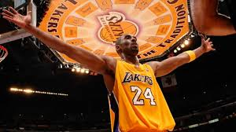
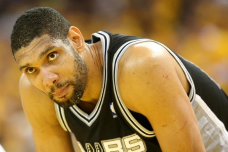

The two defining NBA players of the 2000s evoke close comparisons, even with opposite personalities.
Links to highlights of both players
Some Info on Kobe Bryant

Kobe Bryant was a larger than life superstar who played his entire NBA basketball career with the Los Angeles Lakers. Known for his two-way game and endless offensive arsenal (including his patented fadeaway jumpshot), Kobe was motivated unlike anybody to achieve success. His intensity demanded the best out of all those around him, which helped lead his teams to seven finals appearances and five championship rings.
Some Info on Tim Duncan

Tim Duncan, along with Gregg Popovich, was the fulcrum upon which the Spurs' unprecendent 20+ year stretch of NBA success was built. Coming out of college and ready to dominate the NBA immediately, Duncan was the defensive anchor of a consistently elite defensive squad year in and year out, while also being the Spurs' best scorer for over ten years. Duncan's willingness to supress his ego and be completely coachable set the standard for all other Spurs players to follow over two decades, netting them five championships, and netting Duncan three finals MVP awards (he was less than ten seconds away from netting his fourth of those trophies until Ray Allen did his thing...)